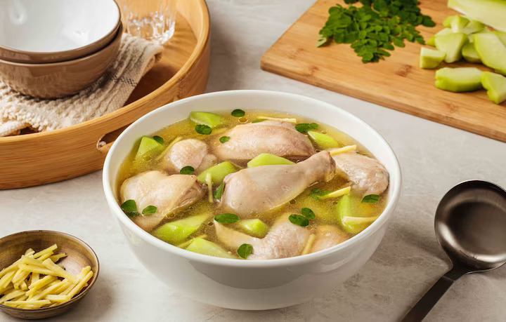

Chicken Tinola Recipe

This chicken tinola recipe highlights the rich flavors of Knorr Chicken Cubes and the distinct aroma of ginger. Make this version to soothe your soul.
Chicken Tinola is a Filipino soup dish. It involves cooking chicken pieces in ginger broth. It is a popular cold weather dish. I always feel warm and cozy every time I eat it. This Filipino Chicken Soup is best enjoyed with fish sauce as dipping sauce, and a cup of warm white rice.
Ingredients:
- 1 tbsp cooking oil
- 1 pc onion, small -sized, chopped
- 2 cloves garlic, chopped
- 1 pc ginger, cut into strips
- ½ kilo chicken, cut into 8 pcs
- 4 cups water
- 2 pcs Knorr chicken cubes
- 1 pc chayote or 1 pc small - sized green papaya, sliced
- 2 stalks moringa leaves
Instructions:
- Get a pot and bring it up to medium heat before pouring in the oil. Drop in the onions, garlic and ginger and sauté slowly for about 2 minutes or until you can smell the lovely aroma.
- It’s time to drop in the chicken pieces and stir until it turns white or light brown in color.It’s time to drop in the chicken pieces and stir until it turns white or light brown in color.
- Pour in the water and add your Knorr Chicken Broth cubes. Bring this to a simmer until chicken is tender and cooked through.
- You can now add your sayote or green papaya and cook until tender
- Dahon ng sili is added at the last stage to ensure leaves (and nutrients) don’t dry up. Give this a minute then it is done. Malunggay is also another healthy alternative because it is packed with vitamins and minerals which are good for nursing moms and kids as well.
- Enjoy this with patis and calamansi on the side. See the faces of your whole family light up as you bring this to the table.